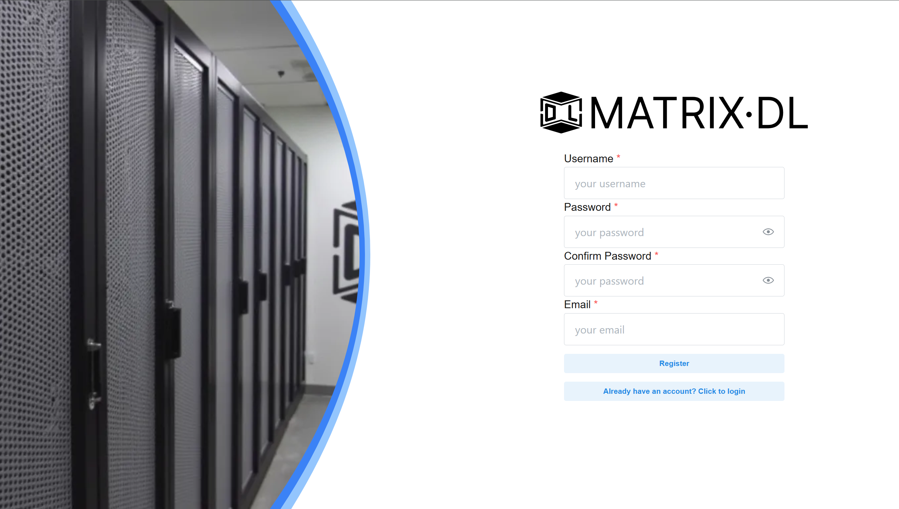
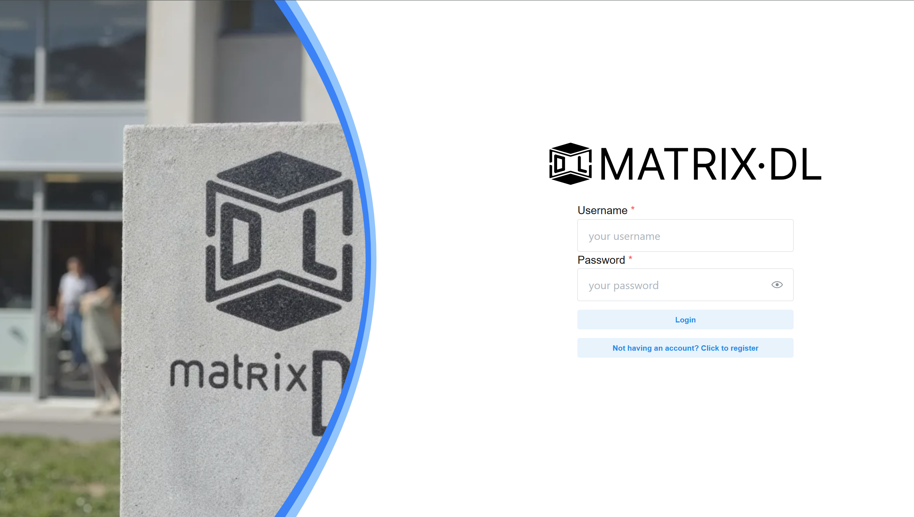
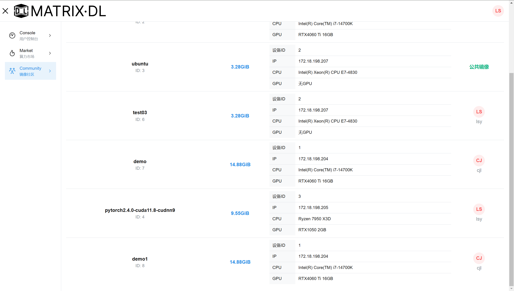
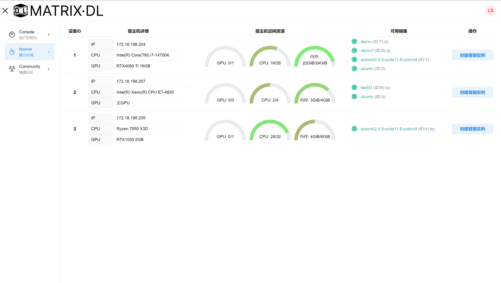
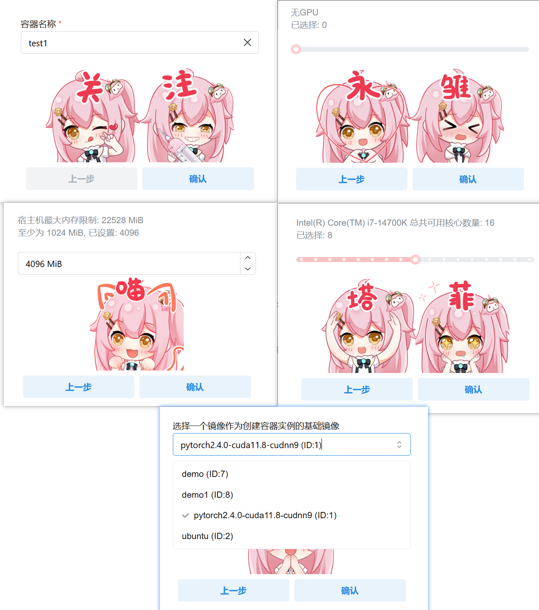
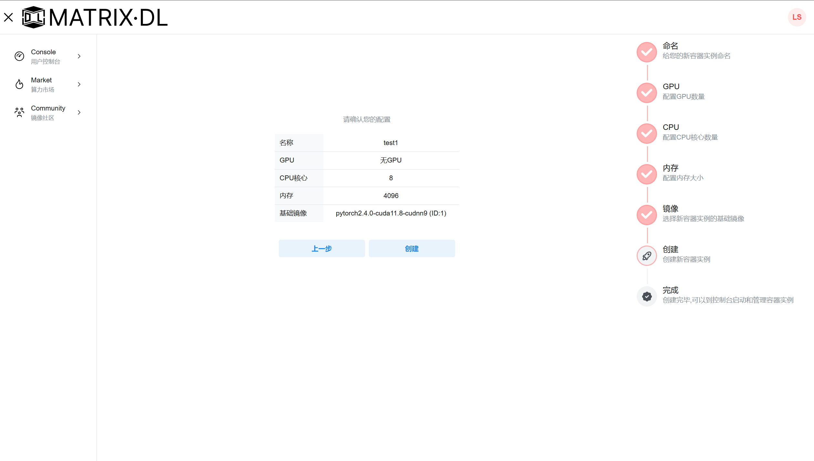
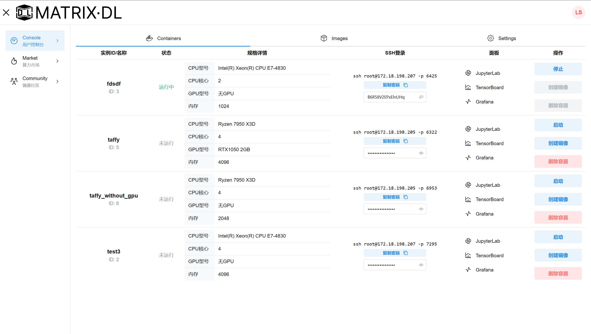
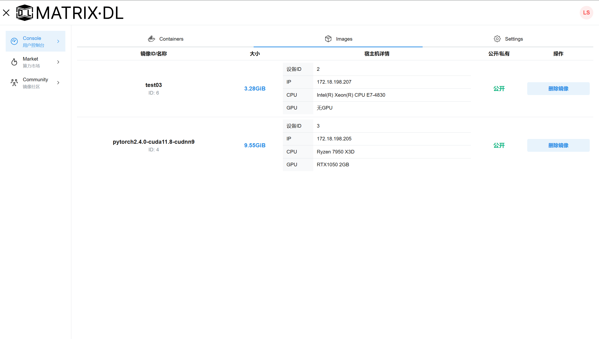
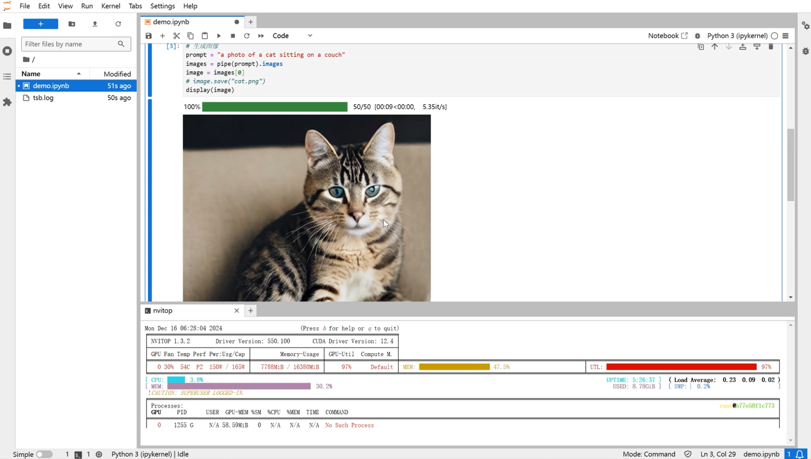
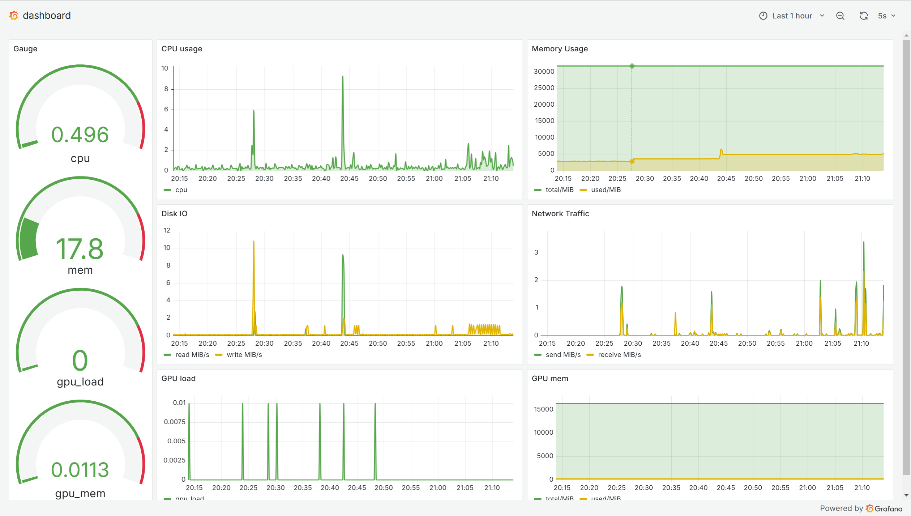

功能界面
注册
新用户输入用户名、密码、确认密码、邮箱后即可注册

登录

镜像社区
镜像社区展示了所有可用的镜像，包括公共镜像和用户创建并分享的镜像

对于每个镜像，都具有镜像ID、镜像名称、镜像大小、所属设备等属性。
算力市场
主页
算力市场的主页展示所有工作结点，每个结点具有IP地址、CPU型号、GPU型号等属性，以及当前空闲资源和可用镜像

创建实例
点击创建容器实例，进入创建界面


选择所需的CPU、内存、GPU等硬件配置，系统的数据库会记录每台工作结点的资源使用情况，限制用户申请的资源数量，避免工作结点负载过高。
控制台
容器管理
容器实例的管理包括创建、启动、停止、删除、创建镜像等操作
控制台列出用户的所有容器实例，每个容器具有容器名、状态、资源限额、端口映射、登录密码等配置。
每个容器都提供ssh访问指令、jupyterLab/tensorboard/grafana访问链接
用户可以从容器创建镜像，保存配置好的环境。在创建的过程中，可以设置镜像公开还是私有，对于公开镜像能够被其他用户在镜像社区访问。

镜像管理
用户从容器创建的镜像能够在此页面管理

容器交互
在控制台的容器界面可以找到进入每个容器的入口
jupyter notebook
复制容器密码，然后点击JupyterLab，为了安全性，jupyterLab需要输入密码才能访问。
用户在jupyter上编写代码、运行代码、使用终端，例如下图，编写代码运行了diffusion模型推理，生成一张可爱的猫咪图片

tensorboard
点击访问容器内的6006端口。这是Tensorboard的默认允许端口，如果您启动了tensorboard，可以看到下面的界面

Grafana
点击访问Grafana，访问用户友好的仪表盘，展示容器所在物理机的实时状态
使用grafana的好处是界面美观、可互动性强。除此之外，得益于数据库的加持，用户可以查询任意指定时间的设备状态

ssh
在控制台复制ssh登录指令和密码，通过ssh连接到容器